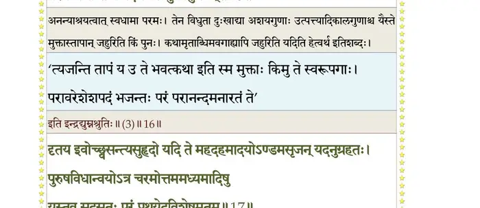
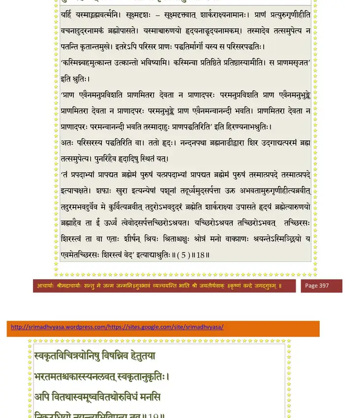
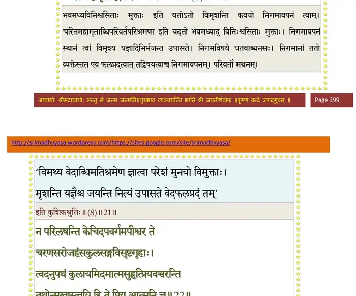
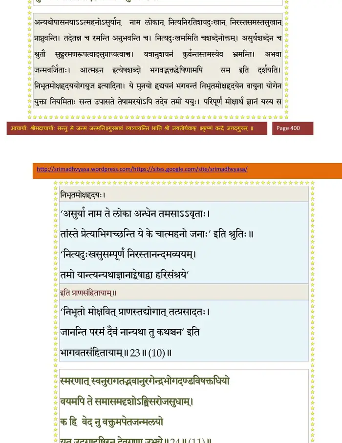
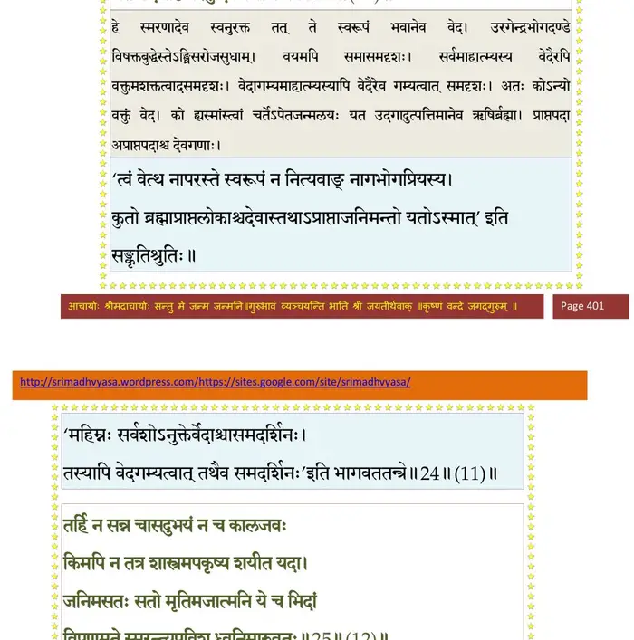
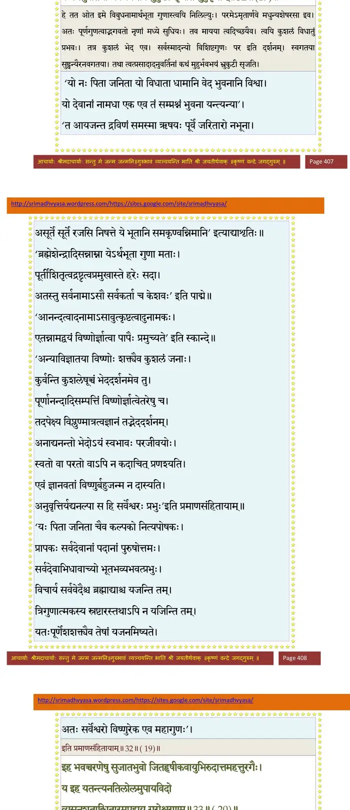
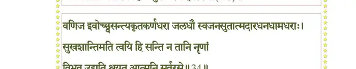
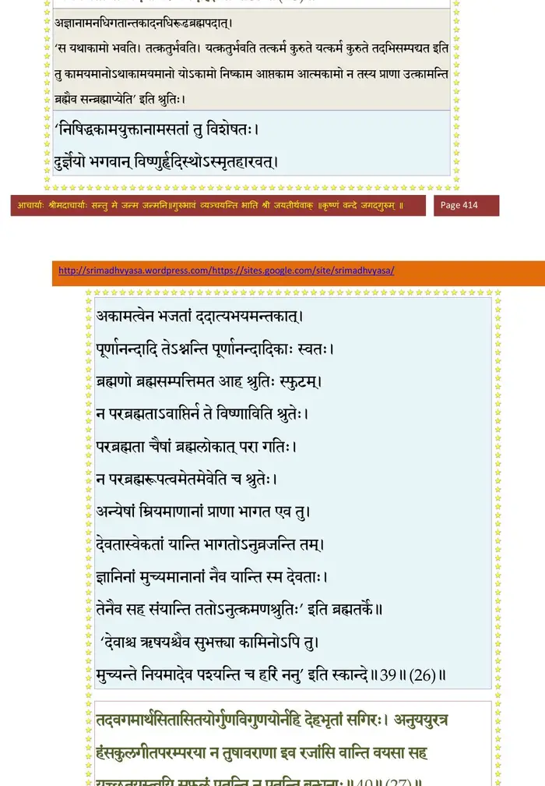
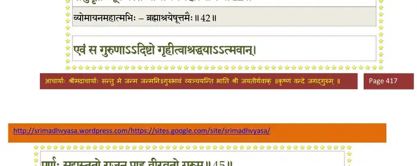

स्कन्ध 10 · अध्याय 96
श्लोक १
राजोवाच—
ब्रह्मन् ब्रह्मण्यनिर्देश्ये निर्गुणे गुणवृत्तयः ।
कथं चरन्ति श्रुतयः साक्षात् सदसतः परे।। १ ।।
ब्रह्मन् ब्रह्मण्यनिर्देश्ये निर्गुणे गुणवृत्तयः ।
कथं चरन्ति श्रुतयः साक्षात् सदसतः परे।। १ ।।
श्लोक २
बुद्धीन्द्रियमनःप्राणान् जनानामसृजत् प्रभुः ।
मात्रार्थं च भवार्थं च आत्मने कल्पनाय च।। २ ।।
मात्रार्थं च भवार्थं च आत्मने कल्पनाय च।। २ ।।
श्लोक ३
सैषा ह्युपनिषद् ब्राह्मी पूर्वेषां पूर्वजैर्धृता ।
श्रद्धया धारयेद् यस्तां क्षेमं गच्छेदकिञ्चनः।। ३ ।।
श्रद्धया धारयेद् यस्तां क्षेमं गच्छेदकिञ्चनः।। ३ ।।
श्लोक ४
अत्र ते वर्णयिष्यामि गाथां नारायणोदिताम् ।
नारदस्य च संवादमृषेर्नारायणस्य च।। ४ ।।
नारदस्य च संवादमृषेर्नारायणस्य च।। ४ ।।
श्लोक ५
एकदा नारदो लोकान् पर्यटन् भगवत्प्रियः ।
सनातनमृषिं द्रष्टुं ययौ नारायणाश्रमम्।। ५ ।।
सनातनमृषिं द्रष्टुं ययौ नारायणाश्रमम्।। ५ ।।
श्लोक ६
योऽसौ भारतवर्षेऽस्मिन् क्षेमाय स्वस्तये नृणाम् ।
धर्मज्ञानशमोपेतः साकल्यादास्थितस्तपः।। ६ ।।
धर्मज्ञानशमोपेतः साकल्यादास्थितस्तपः।। ६ ।।
श्लोक ७
तत्रोपविष्टमृषिभिः कलापग्रामवासिभिः ।
परीतं प्रणतोऽपृच्छदिदमेव कुरूद्वह।। ७ ।।
परीतं प्रणतोऽपृच्छदिदमेव कुरूद्वह।। ७ ।।
श्लोक ८
तस्मा अवोचद् भगवान् ऋषीणां शृण्वतामिमाम् ।
यो ब्रह्मवादः पूर्वेषां जनलोकनिवासिनाम्।। ८ ।।
यो ब्रह्मवादः पूर्वेषां जनलोकनिवासिनाम्।। ८ ।।
श्लोक ९
श्रीभगवानुवाच—
स्वायम्भुवं ब्रह्मसत्रं जनलोकेऽभवत् पुरा ।
तत्रत्यानां मानसानां मुनीनामूर्ध्वरेतसाम्।। ९ ।।
स्वायम्भुवं ब्रह्मसत्रं जनलोकेऽभवत् पुरा ।
तत्रत्यानां मानसानां मुनीनामूर्ध्वरेतसाम्।। ९ ।।
श्लोक १०
श्वेतद्वीपं गतवति त्वयि द्रष्टुं तमीश्वरम् ।
ब्रह्मवादः सुसंवृत्तः श्रुतयो यत्र शेरते।। १० ।।
ब्रह्मवादः सुसंवृत्तः श्रुतयो यत्र शेरते।। १० ।।
श्लोक ११
तत्राप्ययमभूत् प्रश्नस्त्वं मां यदनुपृच्छसि ।
तुल्यश्रुततपःशीलास्तुल्यस्वीयारिमध्यमाः।। ११ ।।
तुल्यश्रुततपःशीलास्तुल्यस्वीयारिमध्यमाः।। ११ ।।
श्लोक १२
अपि चक्रुः प्रवचनमेकं शुश्रूषवोऽपरे।। १२ ।।
श्लोक १३
सनन्दन उवाच—
स्वसृष्टमिदमापीय शयानं सहशक्तिभिः ।
तदन्ते बोधयाञ्चक्रुस्तल्लिङ्गैः श्रुतयः परम्।। १३ ।।
स्वसृष्टमिदमापीय शयानं सहशक्तिभिः ।
तदन्ते बोधयाञ्चक्रुस्तल्लिङ्गैः श्रुतयः परम्।। १३ ।।
श्लोक १४
यथा शयानं सम्राजं बन्दिनस्तत्पराक्रमैः ।
प्रत्यूषेऽभ्येत्य सुश्लोकैर्बोधयन्त्यनुजीविनः।। १४ ।।
प्रत्यूषेऽभ्येत्य सुश्लोकैर्बोधयन्त्यनुजीविनः।। १४ ।।
श्लोक १५
श्रुतय ऊचुः—
जयजय जह्यजामजित दोषगृहीतगुणां
त्वमसि यदात्मना समवरुद्धसमस्तभगः ।
अज जगदोकसामखिलशक्त्यवबोधक ते
क्वचिदजयाऽऽत्मनाऽनुचरतोऽनुचरेन्निगमः।। १५ ।।
जयजय जह्यजामजित दोषगृहीतगुणां
त्वमसि यदात्मना समवरुद्धसमस्तभगः ।
अज जगदोकसामखिलशक्त्यवबोधक ते
क्वचिदजयाऽऽत्मनाऽनुचरतोऽनुचरेन्निगमः।। १५ ।।
श्लोक १६
बृहदुपलब्धमेतदवशेषतया
यत उदगास्तमस्यविकृतेऽविकृतः ।
अत ऋषयो दधुस्त्वयि मनोवचनाचरितं
कथमयथा भवन्ति भुवि दत्तपदानि नृणाम्।। १६ ।।
यत उदगास्तमस्यविकृतेऽविकृतः ।
अत ऋषयो दधुस्त्वयि मनोवचनाचरितं
कथमयथा भवन्ति भुवि दत्तपदानि नृणाम्।। १६ ।।
श्लोक १७
इति सूरयस्त्र्यधिपतेऽखिललोकमल
क्षपणं तव कथामृताब्धिमवगाह्य तपांसि जहुः ।
किमुत पुनः स्वधामविधुताशयकालगुणाः
परम भजन्ति ये पदमजस्रसुखानुभवम्।। १७ ।।
क्षपणं तव कथामृताब्धिमवगाह्य तपांसि जहुः ।
किमुत पुनः स्वधामविधुताशयकालगुणाः
परम भजन्ति ये पदमजस्रसुखानुभवम्।। १७ ।।
भागवततात्पर्यनिर्णय

श्लोक १८
दृतय इवोच्छ्वसन्त्यसुहृदो यदि ते
महदहमादयोऽण्डमसृजन् यदनुग्रहतः ।
पुरुषविधान्वयोऽत्र चरमोत्तममध्यमादिषु य-
स्तव सदसतः परं प्रथयेदविशेषमृतम्।। १८ ।।
महदहमादयोऽण्डमसृजन् यदनुग्रहतः ।
पुरुषविधान्वयोऽत्र चरमोत्तममध्यमादिषु य-
स्तव सदसतः परं प्रथयेदविशेषमृतम्।। १८ ।।
श्लोक १९
उदरमुपासते यर्हि वर्त्मनि सूक्ष्मदृशः
परिसरपद्धतिं हृदयमारुणयो दहरम् ।
तत उदगाच्च नन्दनपथाऽथ शिरः परमं
पुनरिह यत् समेत्य न पतन्ति कृतान्तमुखे।। १९ ।।
परिसरपद्धतिं हृदयमारुणयो दहरम् ।
तत उदगाच्च नन्दनपथाऽथ शिरः परमं
पुनरिह यत् समेत्य न पतन्ति कृतान्तमुखे।। १९ ।।
भागवततात्पर्यनिर्णय

श्लोक २०
स्वकृतविचित्रयोनिषु विशन्निव हेतुतया
भरतमतश्चकास्स्यनलवत् स्वकृतानुकृतिः ।
अपि वितथास्वमूष्ववितथोरुविधं मनसि
निकटधियो नयन्त्यभिविपत्य तव।। २० ।।
भरतमतश्चकास्स्यनलवत् स्वकृतानुकृतिः ।
अपि वितथास्वमूष्ववितथोरुविधं मनसि
निकटधियो नयन्त्यभिविपत्य तव।। २० ।।
श्लोक २१
प्रक्रमवत् स्वसत्कृतं पुरुषेषु धीषु तु बहिरन्तरसच्चरणे ।
तव पुरुष वदन्त्यखिलशक्तिधृतः स्वकृतम्।। २१ ।।
तव पुरुष वदन्त्यखिलशक्तिधृतः स्वकृतम्।। २१ ।।
श्लोक २२
इति विमृशन्ति कवयो निगमावपनं
य(भ)जन्त उपासते भवमध्यविनिश्वसिताः ।
दुरवगमात्मतत्वनिगमायतवाङ्मनस-
श्चरितमहामृताब्धिपरिवर्तपरिश्रमणाः।। २२ ।।
य(भ)जन्त उपासते भवमध्यविनिश्वसिताः ।
दुरवगमात्मतत्वनिगमायतवाङ्मनस-
श्चरितमहामृताब्धिपरिवर्तपरिश्रमणाः।। २२ ।।
भागवततात्पर्यनिर्णय

श्लोक २३
न परिलषन्ति केचिदपवर्गमपीश्वर ते
चरणसरोजहंसकुलसङ्गविसृष्टगृहाः ।
त्वदनुपथं कुलायमिदमात्मसुहृत् प्रियव-
च्चरन्ति तथोन्मुखास्त्वयि हिते प्रिय आत्मनि च।। २३ ।।
चरणसरोजहंसकुलसङ्गविसृष्टगृहाः ।
त्वदनुपथं कुलायमिदमात्मसुहृत् प्रियव-
च्चरन्ति तथोन्मुखास्त्वयि हिते प्रिय आत्मनि च।। २३ ।।
श्लोक २४
न च रमन्त्यहो असदुपासनयाऽऽत्महनो
यदनुशया भ्रमन्त्यभवाः कुशरीरभृतः ।
निभृतमोक्षहृदययोगयुजो हृदयं
मुनय उपासते तदरयोऽपि ययुः।। २४ ।।
यदनुशया भ्रमन्त्यभवाः कुशरीरभृतः ।
निभृतमोक्षहृदययोगयुजो हृदयं
मुनय उपासते तदरयोऽपि ययुः।। २४ ।।
भागवततात्पर्यनिर्णय

श्लोक २५
स्मरणात्स्वनुराग तद् भवान् उरगेन्द्रभोगदण्डविषक्तधियो
वयमपि ते समासमदृशोऽङ्घ्रिसरोजसुधाम् ।
क इह नु वेद वक्तुमपेतजन्मलयो
यत उदगाद् ऋषिरनु देवगणा उभये।। २५ ।।
वयमपि ते समासमदृशोऽङ्घ्रिसरोजसुधाम् ।
क इह नु वेद वक्तुमपेतजन्मलयो
यत उदगाद् ऋषिरनु देवगणा उभये।। २५ ।।
भागवततात्पर्यनिर्णय

श्लोक २६
तर्हि न सन्न चासदुभयं न च कालजवः
किमपि न तत्र शास्त्रमपकृष्य शयीत यदा ।
जनिमसतः सतो मृतिमजात्मनि ये च भिदां
विपणमृते स्मरन्त्युपविश ध्वनिमारुवतः।। २६ ।।
किमपि न तत्र शास्त्रमपकृष्य शयीत यदा ।
जनिमसतः सतो मृतिमजात्मनि ये च भिदां
विपणमृते स्मरन्त्युपविश ध्वनिमारुवतः।। २६ ।।
श्लोक २७
त्रिगुणमयः पुमानिति यदबोधकृता
त्वयि न भवेत् तदवबोधरसे ।
सदिव मनस्त्रिवृत् त्वयि भवत्यसतां मनुजा-
दयो विमृशन्त्यशेषमिदमार्ततयाऽऽत्मविदः।। २७ ।।
त्वयि न भवेत् तदवबोधरसे ।
सदिव मनस्त्रिवृत् त्वयि भवत्यसतां मनुजा-
दयो विमृशन्त्यशेषमिदमार्ततयाऽऽत्मविदः।। २७ ।।
श्लोक २८
न हि विकृतं त्यजन्ति कनकस्य तदात्मतया
स्वकृतमनुप्रविष्ट इदमात्मतया रसितम् ।
तव ये परिचरन्त्यखिलतत्वनिकेततया
ननु ते पदाऽऽक्रमन्त्यविगणय्य शिरो निर्ऋतेः।। २८ ।।
स्वकृतमनुप्रविष्ट इदमात्मतया रसितम् ।
तव ये परिचरन्त्यखिलतत्वनिकेततया
ननु ते पदाऽऽक्रमन्त्यविगणय्य शिरो निर्ऋतेः।। २८ ।।
श्लोक २९
परिवयसे पशूनिव गिरा विबुधानपि तां-
स्त्वयि दृढसौहृदा ननु पुनन्ति न ते विमुखाः ।
त्वमेकः स्वराडखिलकारकशक्तिधर-
स्तव बलिमुद्वहन्ति समदन्ति च येऽनिमिषाः।। २९ ।।
स्त्वयि दृढसौहृदा ननु पुनन्ति न ते विमुखाः ।
त्वमेकः स्वराडखिलकारकशक्तिधर-
स्तव बलिमुद्वहन्ति समदन्ति च येऽनिमिषाः।। २९ ।।
श्लोक ३०
वर्षभुजोऽखिलक्षितिपतेरिव विश्वसृजो
विदधति यत्र ये त्वधिकृता भवतश्चकिताः ।
स्थिरचरजातयः स्युरज ये त्वनिमित्तयुजो
विरह उदीक्षयेत् यदि परस्य विमुक्तसतः।। ३० ।।
विदधति यत्र ये त्वधिकृता भवतश्चकिताः ।
स्थिरचरजातयः स्युरज ये त्वनिमित्तयुजो
विरह उदीक्षयेत् यदि परस्य विमुक्तसतः।। ३० ।।
श्लोक ३१
न हि परमस्य कश्चिदपरोऽनपरस्य भवेत्
व्ययत इवात्र यस्य च शून्यतुल सन्दधतः ।
अपरिमिता ध्रुवास्तनुभृतो यदि सर्व ततो
न हि न शास्यतेति नियमो ब्रुवते च तथा ।। ३१ ।।
व्ययत इवात्र यस्य च शून्यतुल सन्दधतः ।
अपरिमिता ध्रुवास्तनुभृतो यदि सर्व ततो
न हि न शास्यतेति नियमो ब्रुवते च तथा ।। ३१ ।।
श्लोक ३२
अजन परिमुच्यतेऽत्र भवात् सततात्
सममनुजानता ततमनन्तमदुष्टतया ।
न घटत उद्भवः प्रकृतिपूरुषयोरजयो-
रुभययुजोर्भवन्त्यसुभृतो जलबुद्बुदवत्।। ३२ ।।
सममनुजानता ततमनन्तमदुष्टतया ।
न घटत उद्भवः प्रकृतिपूरुषयोरजयो-
रुभययुजोर्भवन्त्यसुभृतो जलबुद्बुदवत्।। ३२ ।।
श्लोक ३३
त्वयि त इमे ततो विबुधनामगुणाः परमे
अमृत इवार्णवे मधु निलिल्युरशेषरसाः ।
नृषु तव मायया स्वगतया कुशलं
त्वयि सुधियोऽङ्ग भेदमनुविधातुमनु प्रभवः ।
कथमनुवर्तिनां भवभयं तव भ्रुकुटी सृजति मुहुर्नृणाम् ।। ३३ ।।
अमृत इवार्णवे मधु निलिल्युरशेषरसाः ।
नृषु तव मायया स्वगतया कुशलं
त्वयि सुधियोऽङ्ग भेदमनुविधातुमनु प्रभवः ।
कथमनुवर्तिनां भवभयं तव भ्रुकुटी सृजति मुहुर्नृणाम् ।। ३३ ।।
भागवततात्पर्यनिर्णय

श्लोक ३४
इह भवच्चरणेषु सुजातभुवो
जितहृषीकवायुभिरुदात्तमहत्तुरगैः ।
य इह यतन्त्यमतिलोलमुपायविदो
व्यसनशताब्धितारमपहाय गुरोश्चरणम्।। ३४ ।।
जितहृषीकवायुभिरुदात्तमहत्तुरगैः ।
य इह यतन्त्यमतिलोलमुपायविदो
व्यसनशताब्धितारमपहाय गुरोश्चरणम्।। ३४ ।।
भागवततात्पर्यनिर्णय

श्लोक ३५
वणिज इवोच्छ्वसन्त्यकृतकर्णधरा जलधौ
स्वजनसुतात्मदारधनधामधराः ।
सुखशान्तिमति त्वयि हि सन्ति न तानि नृणां
विभव उद्यति श्रयत आत्मनि सर्वरसे।। ३५ ।।
स्वजनसुतात्मदारधनधामधराः ।
सुखशान्तिमति त्वयि हि सन्ति न तानि नृणां
विभव उद्यति श्रयत आत्मनि सर्वरसे।। ३५ ।।
श्लोक ३६
इति सदजानतां मिथुनतो रतये चरतां
सुखयति को न्विहाद्य विजने स्वनिरस्तभगे ।
भुुवि पुण्यतीर्थसदना ह्यृषयो
निविशन्त्यतस्तु भवतः पदाम्बुजं हृदाऽघभिदम् ।
दधति सकृन्मनस्त्वयि चिदात्मनि नित्यसुखे
न पुनरुपासते पुरुषसार हरावसथम्।। ३६ ।।
सुखयति को न्विहाद्य विजने स्वनिरस्तभगे ।
भुुवि पुण्यतीर्थसदना ह्यृषयो
निविशन्त्यतस्तु भवतः पदाम्बुजं हृदाऽघभिदम् ।
दधति सकृन्मनस्त्वयि चिदात्मनि नित्यसुखे
न पुनरुपासते पुरुषसार हरावसथम्।। ३६ ।।
श्लोक ३७
इदमप्यथो वदन्ति चे-
न्ननु तर्का व्यभिचरन्ति क्वचित् क्वचिन्मृषा च ।
ततो भयदृग्व्यवहितये विकल्प उषितोऽन्वहमन्धपरम्परया
भ्रमति भारती च तवोरुवृत्तिभिरूढजवा।। ३७ ।।
न्ननु तर्का व्यभिचरन्ति क्वचित् क्वचिन्मृषा च ।
ततो भयदृग्व्यवहितये विकल्प उषितोऽन्वहमन्धपरम्परया
भ्रमति भारती च तवोरुवृत्तिभिरूढजवा।। ३७ ।।
श्लोक ३८
न यदिदमग्र आस न भविष्यदतो निधना-
दनिमित्तकमन्तरा त्वयि विभाति मृषैकरसे ।
अत उपगीयते द्रविणजातिविकल्पपथै-
र्वितथमनोविलासमिदमित्यवयन्ति बुधाः।। ३८ ।।
दनिमित्तकमन्तरा त्वयि विभाति मृषैकरसे ।
अत उपगीयते द्रविणजातिविकल्पपथै-
र्वितथमनोविलासमिदमित्यवयन्ति बुधाः।। ३८ ।।
श्लोक ३९
उदगात् पुमाननुगीतगुणांश्च जुषन्
भजति सरूपतां तदनु जहासि जिहासि ताम् ।
अहिरिव त्वचं परमात्तभगां
महसि महीयसेऽष्टगुणोऽपरिमेयभगः।। ३९ ।।
भजति सरूपतां तदनु जहासि जिहासि ताम् ।
अहिरिव त्वचं परमात्तभगां
महसि महीयसेऽष्टगुणोऽपरिमेयभगः।। ३९ ।।
श्लोक ४०
यदि न समु(त्स)च्चरन्ति यतयोऽपि हृदि कामजडाः
दुरधिगमोऽसतां हृदि गतोऽस्मृतकण्ठमणिः ।
अनुतृप्तयोगिनामभयो भगवन्
अनवगतान्तकादनधिरूढपदाद् भवतः।। ४० ।।
दुरधिगमोऽसतां हृदि गतोऽस्मृतकण्ठमणिः ।
अनुतृप्तयोगिनामभयो भगवन्
अनवगतान्तकादनधिरूढपदाद् भवतः।। ४० ।।
भागवततात्पर्यनिर्णय

श्लोक ४१
तदवगमार्थसितासितयोर्गुणविगुणयोर्न हि देहभृतां सगिरः
अनुययुरत्र हंसकुलगीतपरम्परया ।
न तुषावरणा इव रजांसि वान्ति वयसा सह यच्छ्रुतय-
स्त्वयि सफलं पतन्ति न पतन्ति बन्धनाः।। ४१ ।।
अनुययुरत्र हंसकुलगीतपरम्परया ।
न तुषावरणा इव रजांसि वान्ति वयसा सह यच्छ्रुतय-
स्त्वयि सफलं पतन्ति न पतन्ति बन्धनाः।। ४१ ।।
श्लोक ४२
श्रीभगवानुवाच–
इत्येतद् ब्रह्मणः पुत्रा आश्रुत्यात्मानुशासनम् ।
सनन्दनमथानर्चुः सिद्धा ज्ञात्वाऽऽत्मनो गतिम्।। ४२ ।।
इत्येतद् ब्रह्मणः पुत्रा आश्रुत्यात्मानुशासनम् ।
सनन्दनमथानर्चुः सिद्धा ज्ञात्वाऽऽत्मनो गतिम्।। ४२ ।।
श्लोक ४३
इत्यशेषसमाम्नायपुराणोपनिषद्रसः ।
समुद्धृतः पूर्वजैस्तैर्व्योमायनमहात्मभिः।। ४३ ।।
समुद्धृतः पूर्वजैस्तैर्व्योमायनमहात्मभिः।। ४३ ।।
भागवततात्पर्यनिर्णय

श्लोक ४४
त्वं चैतद् ब्रह्मदायाद श्रद्धयाऽऽत्मानुशासनम् ।
धारयन् भज मे कामं कामानां निधनं नृणाम्।। ४४ ।।
धारयन् भज मे कामं कामानां निधनं नृणाम्।। ४४ ।।
श्लोक ४५
एवं स गुरुणाऽऽदिष्टो गृहीत्वा श्रद्धयाऽऽत्मवान् ।
पूूर्णः सद्यस्ततो राजन् प्राह वीरव्रतो गुरुम्।। ४५ ।।
पूूर्णः सद्यस्ततो राजन् प्राह वीरव्रतो गुरुम्।। ४५ ।।
श्लोक ४६
नारद उवाच—
नमस्तस्मै भगवते कृष्णायामलमूर्तये ।
यो धाता सर्वभूूतानामभयो यस्य ते कलाः ।। ४६ ।।
नमस्तस्मै भगवते कृष्णायामलमूर्तये ।
यो धाता सर्वभूूतानामभयो यस्य ते कलाः ।। ४६ ।।
श्लोक ४७
श्रीशुक उवाच—
इत्याद्यमृषिमामन्त्र्य तच्छिष्यांश्चामलात्मकान् ।
ततोऽगादाश्रमं साक्षात् पितुर्द्वैपायनस्य मे।। ४७ ।।
इत्याद्यमृषिमामन्त्र्य तच्छिष्यांश्चामलात्मकान् ।
ततोऽगादाश्रमं साक्षात् पितुर्द्वैपायनस्य मे।। ४७ ।।
श्लोक ४८
सभाजितो भगवता कृतासनपरिग्रहः ।
तस्मै तद् वर्णयामास नारायणमुखाच्छ्रुतम्।। ४८ ।।
तस्मै तद् वर्णयामास नारायणमुखाच्छ्रुतम्।। ४८ ।।
श्लोक ४९
तदेतद् वर्णितं राजन् यश्च प्रश्नः कृतस्त्वया ।
येन ब्रह्मण्यनिर्देश्ये निर्गुणेऽपि मनश्चरेत्।। ४९ ।।
येन ब्रह्मण्यनिर्देश्ये निर्गुणेऽपि मनश्चरेत्।। ४९ ।।
श्लोक ५०
यो ह्यात्मा जगदादिमध्यनिधनो योऽव्यक्तजीवेश्वरो
यः सृष्ट्वेदमनुप्रविष्ट ऋषिणा चक्रे पुनः संहिताम् ।
यं सम्पद्य जहात्यजामनुशयी सुप्तः कुलायं यथा
तं कैवल्यनिरस्तयोनिमभयं ध्यायेदजस्रं हरिम्।। ५० ।।
यः सृष्ट्वेदमनुप्रविष्ट ऋषिणा चक्रे पुनः संहिताम् ।
यं सम्पद्य जहात्यजामनुशयी सुप्तः कुलायं यथा
तं कैवल्यनिरस्तयोनिमभयं ध्यायेदजस्रं हरिम्।। ५० ।।
।। इति श्रीमद्भागवते दशमस्कन्धे षण्णवतितमोऽध्यायः ।।